Elektronische Gesundheitskarte und Telematikinfrastruktur
Spezifikation
Basis- und KTR-Consumer
| Version | 1.5.0 |
| Revision | 571738 |
| Stand | 13.05.2022 |
| Status | freigegeben |
| Klassifizierung | öffentlich |
| Referenzierung | gemSpec_Basis_KTR_Consumer |
Änderungen zur Vorversion
Anpassungen des vorliegenden Dokumentes im Vergleich zur Vorversion können Sie der nachfolgenden Tabelle entnehmen.
Dokumentenhistorie
| Version |
Stand |
Kap./ Seite |
Grund der Änderung, besondere Hinweise |
Bearbeitung |
|---|---|---|---|---|
| 1.0.0 |
15.05.19 |
initiale Erstellung des Dokuments |
gematik |
|
| 1.1.0 | 28.06.19 | Einarbeitung P19.1 | gematik | |
| 1.2.0 | 30.06.20 | Einarbeitung P22.1 | gematik | |
| 1.3.0 | 10.09.20 | Einarbeitung P22.3 | gematik | |
| 1.3.1 | 19.02.21 | Clientmodul KOM-LE ist für den KTR-Consumer nicht verpflichtend | gematik | |
| 1.3.2 | 06.08.21 | Einarbeitung Consumer_Maintenance_21.3 | gematik | |
| 1.4.0 | 17.02.22 | Einarbeitung Consumer_Maintenance_21.4 und CI_Maintenance_21.2, |
gematik | |
| 1.5.0 | 13.05.22 | 6.5.1 | Einarbeitung Consumer_Maintenance_22.1 | gematik |
Die vorliegende Spezifikation definiert die Anforderungen an Herstellung, Test und Betrieb der beiden Produkttypen Basis-Consumer und KTR-Consumer.
Der Basis-Consumer und der KTR-Consumer sind Produkttypen der TI-Plattform, die in der Rolle eines Consumers mit der Telematikinfrastruktur (TI) interagieren und dabei sowohl Anteile der TI-Plattform als auch Anteile des sicheren Übermittlungsverfahrens KOM-LE (beim Basis-Consumer) enthalten. Der KTR-Consumer enthält darüber hinaus auch Fachmodule, die einem Nutzerkreis „Kostenträger“ die Teilnahme an den dafür vorgesehenen Fachanwendungen der Telematikinfrastruktur ermöglichen.
Das Dokument ist maßgeblich für Anbieter und Hersteller des Produkttyps Basis- und KTR-Consumer sowie für Anbieter und Hersteller von Produkten, die die Schnittstellen des Produkttyps Basis- und KTR-Consumer nutzen.
Dieses Dokument enthält normative Festlegungen zur Telematikinfrastruktur des deutschen Gesundheitswesens. Der Gültigkeitszeitraum der vorliegenden Version und deren Anwendung in Zulassungs- oder Abnahmeverfahren wird durch die gematik GmbH in gesonderten Dokumenten (z.B. Dokumentenlandkarte, Produkttypsteckbrief, Leistungsbeschreibung) festgelegt und bekannt gegeben.
Schutzrechts-/Patentrechtshinweis
Die nachfolgende Spezifikation ist von der gematik allein unter technischen Gesichtspunkten erstellt worden. Im Einzelfall kann nicht ausgeschlossen werden, dass die Implementierung der Spezifikation in technische Schutzrechte Dritter eingreift. Es ist allein Sache des Anbieters oder Herstellers, durch geeignete Maßnahmen dafür Sorge zu tragen, dass von ihm aufgrund der Spezifikation angebotene Produkte und/oder Leistungen nicht gegen Schutzrechte Dritter verstoßen und sich ggf. die erforderlichen Erlaubnisse/Lizenzen von den betroffenen Schutzrechtsinhabern einzuholen. Die gematik GmbH übernimmt insofern keinerlei Gewährleistungen.
Spezifiziert werden in dem Dokument die von den Produkttypen Basis- und KTR-Consumer bereitgestellten (angebotenen) Schnittstellen. Benutzte Schnittstellen werden hingegen in der Spezifikation desjenigen Produkttypen beschrieben, der diese Schnittstelle bereitstellt. Auf die entsprechenden Dokumente wird referenziert (siehe auch Anhang A5).
Die vollständige Anforderungslage für die Produkttypen ergibt sich aus weiteren Konzept- und Spezifikationsdokumenten, diese sind in den Produkttypsteckbriefen des Produkttyps Basis- bzw. KTR-Consumer verzeichnet.
Anforderungen als Ausdruck normativer Festlegungen werden durch eine eindeutige ID sowie die dem RFC 2119 [RFC2119] entsprechenden, in Großbuchstaben geschriebenen deutschen Schlüsselworte MUSS, DARF NICHT, SOLL, SOLL NICHT, KANN gekennzeichnet.
Sie werden im Dokument wie folgt dargestellt:
<AFO-ID> - <Titel der Afo>
Text / Beschreibung
[<=]
Dabei umfasst die Anforderung sämtliche zwischen der ID und der Textmarke angeführten Inhalte.
Die Produkttypen Basis- und KTR-Consumer sind beides Realisierungen des konzeptionellen Konstrukts „RZ-Consumer“ aus [gemKPT_Arch_TIP]. D.h., sie agieren als Consumer in der Telematikinfrastruktur (TI), nutzen dabei zentrale Dienste, die Dienste des sicheren Übermittlungsverfahrens und ggf. fachanwendungsspezifische Dienste und werden in einem Rechenzentrum entsprechend den Vorgaben der TI betrieben. Beide Produkttypen bieten für externe Clients eine Menge von Basisfunktionen (z.B. kryptographische Operationen), ermöglichen den Zugriff auf weitere Anwendungen des Gesundheitswesens und die Nutzung des sicheren Übermittlungsverfahrens KOM-LE (beim Basis-Consumer).
Der Basis-Consumer ermöglicht es den Gesellschaftern der gematik sowie den durch sie vertretenen Organisationen, als Nutzer an der TI teilzunehmen. Der Zugriff auf Fachanwendungen der TI ist dieser Nutzergruppe nicht gestattet. Der Produkttyp enthält demnach zwar keine Fachmodule, aber ein Clientmodul KOM-LE zur Nutzung des sicheren Übermittlungsverfahrens. Auf technischer Ebene wird die jeweilige Nutzergruppe durch die kryptographische Identität der SMC-B Org oder SMC-B KTR (jeweils auf Basis oid_kostenträger) identifiziert, die in einem HSM oder auf einer Karte gespeichert wird.
Der KTR-Consumer ermöglicht es Kostenträgern, als Nutzer an der TI teilzunehmen. Durch enthaltene Fachmodule können dabei Fachanwendungen, bei der die Kostenträger als berechtigte Nutzer festgelegt sind (mit Ausnahme von VSDM), und die weiteren Anwendungen des Gesundheitswesens genutzt werden. Auf technischer Ebene wird die Nutzergruppe durch kryptographische Identitäten der SMC-B KTR (auf Basis oid_kostenträger und oid_epa_ktr) identifiziert, die in einem HSM gespeichert werden.
Nachfolgend wird angelehnt an den Systemüberblick aus [gemKPT_Arch_TIP] die Einbettung der Produkttypen Basis-Consumer und KTR-Consumer in das System der TI dargestellt. Die Darstellung ist reduziert auf die Produkttypen der TI sowie Clients und Anwendungen außerhalb der TI, mit denen potentiell eine Interaktion stattfindet. Die Festlegungen des vorliegenden Dokuments beziehen sich auf die Produkttypen Basis-Consumer und KTR-Consumer als Ganzes und das logische Konstrukt des Consumer-Adapters aus [gemKPT_Arch_TIP], das den Umfang der Basisfunktionen der Produkttypen festlegt.
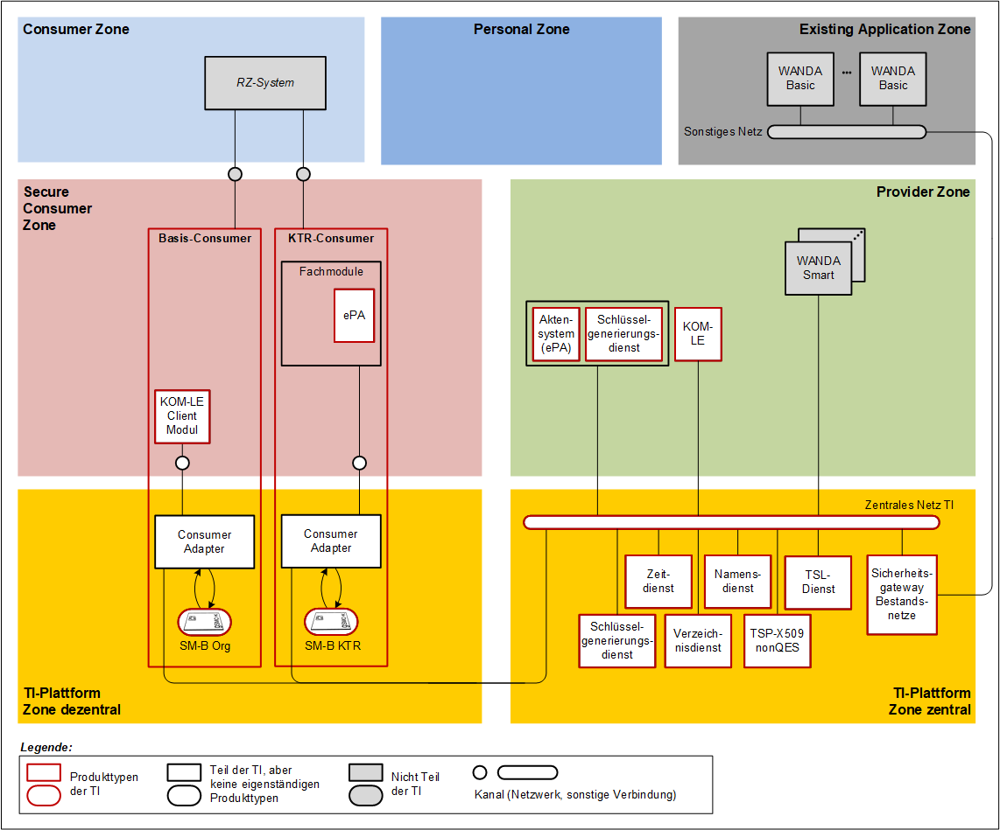
Abbildung 1: Systemkontext für Basis- und KTR-Consumer
Der Produkttyp Basis-Consumer teilt sich in die folgenden Bestandteile auf:
Der Produkttyp KTR-Consumer teilt sich in die folgenden Bestandteile auf:
Die Festlegungen der vorliegenden Dokuments beziehen sich auf die Produkttypen Basis-Consumer und KTR-Consumer als Ganzes sowie deren oben aufgeführten Bestandteile, mit Ausnahme des Fachmoduls ePA und des Clientmoduls KOM-LE, welche in [gemSpec_FM_ePA_KTR_Consumer], bzw. [gemSpec_CM_KOMLE], beschrieben sind. Das logische Konstrukt des Consumer-Adapters aus [gemKPT_Arch_TIP], wird durch die Basisfunktionen und den LDAP-Proxy in dem für die Produkttypen benötigten Umfang umgesetzt.
Einige Anforderungen des vorliegenden Dokuments, sowie der Spezifikationen des Clientmoduls und des Fachmoduls, sind nur in Abhängigkeit einer konkreten Produktausprägung verpflichtend umzusetzen. Die Kennzeichnung dieser Anforderungen ist Bestandteil der jeweiligen Produtkttypsteckbriefe des Basis- oder KTR-Consumers.
Die Basisfunktionen enthalten:
Der Basis- und KTR-Consumer ermöglicht es Clientsystemen und Clientmodulen durch Nutzung des LDAP-Proxies Daten aus dem Verzeichnisdienst der TI-Plattform (VZD) abzufragen. Die Kommunikation erfolgt über das LDAPv3-Protokoll.
Der Basis-Consumer enthält ein Clientmodul KOM-LE, um das sichere Übermittlungsverfahren KOM-LE nutzen zu können. Es werden die Anwendungsfälle „Senden und Empfangen von Nachrichten“ unterstützt. Die Spezifikation [gemSpec_CM_KOMLE] gilt in großen Teilen auch für den Basis-Consumer. Es gibt aber verschiedene Bereiche, in denen eine Anpassung für den Basis-Consumer erforderlich ist. Für diese Bereiche werden neue Anforderungen aufgenommen, die statt der bestehenden Anforderungen aus [gemSpec_CM_KOMLE] zu verwenden sind. Die Bereiche sind:
Unter Anbindung per LAN/WAN werden die Mechanismen beschrieben, mit denen der Basis- und KTR-Consumer auf der einen Seite in das lokale Netz der Einsatzumgebung und auf der anderen Seite in die zentrale TI sowie WANDA Basic und die WANDA Smart angebunden wird. Diese wesentlichen Aspekte betreffen Routing und Firewall.
A_17396
Der Basis- und KTR-Consumer MUSS sich nach den in [RFC1812#1.1.3] definierten Rahmenbedingungen als IP-Version-4-(IPv4)-Router verhalten. Die in [RFC2644] geforderten Aktualisierungen zum [RFC1812] MÜSSEN umgesetzt werden. <=
A_17397
Der Basis- und KTR-Consumer DARF NICHT IP-Pakete mit gesetzter Source Route Option gemäß [RFC791] erzeugen oder weiterleiten. <=
A_17400-01
DerBasis- und KTR-Consumer MUSS für die Kommunikation mit Adressbereichen der TI sowie WANDA Basic und WANDA Smart eine Network Address Translation (NAT) gemäß [RFC3022#2.2, 3, 4.1-4.3] vornehmen.
Für die Umsetzung der Private Local Address aus den Adressbereichen der Einsatzumgebung MUSS die verwendete IP-Adresse aus dem vom Anbieter Zentrale Plattform Dienste (AZPD) bereitgestellten Adress-Pool entnommen werden und als Global Address genutzt werden. <=
A_17405
Der Basis- und KTR-Consumer MUSS die IP Version 4 (IPv4) für alle seine IP-Schnittstellen unterstützen.
Die Hardware des Basis- und KTR-Consumer MUSS für den Einsatz von IPv4 und IPv6 im Dual-Stack-Mode geeignet sein.
Bis zu einer Migration von IPv4 auf IPv6 MUSS der Basis- und KTR-Consumer sämtliche empfangenen IP-Pakete der Version 6 (IPv6) verwerfen. <=
Die Anbindung des Basis- und KTR-Consumers an die zentrale TI erfolgt über einen Sicheren Zentralen Zugangspunkt (SZZP), siehe [gemSpec_Net#3.1.1]. Dieser Produkttyp unterstützt kein dynamisches Routing.
A_17406
Basis- und KTR-Consumer DÜRFEN NICHT Dynamische Routing-Protokolle einsetzen. <=
In Anlehnung an die in der [gemSpec_Net#2.3.3] definierten Netzwerksegmente werden in der Basis- und KTR-Consumerspezifikation die folgenden Bezeichner verwendet:
Tabelle 1: Mapping der Netzwerksegmente
| ReferenzID im Basis- und KTR-Consumer |
Adressbereich für die TI-Produktivumgebung |
Adressbereich für die TI-Testumgebung |
Adressbereich für die TI-Referenzumgebung |
|---|---|---|---|
| NET_TI_ ZENTRAL |
TI_Zentral - Zentrale Dienste |
TI_Test_Zentral - Zentrale Dienste |
Ist durch den Testbetriebsverantwortlichen zu definieren. |
| NET_TI_ GESICHERTE_ FD |
TI_Fachdienste - Gesicherte Fachdienste |
TI_Test_Fachdienste - Gesicherte Fachdienste |
Ist durch den Testbetriebsverantwortlichen zu definieren. |
| NET_TI_OFFENE_FD |
TI_Fachdienste - Offene Fachdienste |
TI_Test_Fachdienste - Offene Fachdienste |
Ist durch den Testbetriebsverantwortlichen zu definieren. |
| NET_WANDA_Smart | WANDA Smart | WANDA Smart | WANDA Smart |
| NET_CONSUMER |
Liste der Netzwerke die in der Einsatzumgebung über den Basis- und KTR-Consumer erreichbar sind. Ein Eintrag der Liste enthält die Netzwerkadresse und den Netzwerkpräfix. |
||
| NET_WANDA_Basic | WANDA Basic | WANDA Basic | WANDA Basic |
A_17411
Der Basis- und KTR-Consumer MUSS sicherstellen, dass IP-Pakete mit dem Ziel NET_TI_Offene_FD und NET_WANDA_Smart weitergeleitet werden. <=
A_17514
Der KTR-Consumer MUSS sicherstellen, dass IP-Pakete mit dem Ziel NET_TI_Gesicherte_FD nur durch das im KTR-Consumer vorhandene jeweilige Fachmodul in Richtung TI mit dem Ziel NET_TI_Gesicherte_FD weitergeleitet werden. <=
A_17415
Der Basis- und KTR-Consumer MUSS sicherstellen, dass IP-Pakete in Richtung NET_TI_ZENTRAL mit dem Ziel TI-Namens- und Zeitdienst nur vom Basis- und KTR-Consumer weitergeleitet werden. <=
A_21998
Der Basis- und KTR-Consumer MUSS sicherstellen, dass IP-Pakete mit dem Ziel NET_WANDA_Basic weitergeleitet werden. <=
A_17417
Der Basis- und KTR-Consumer MUSS nicht genehmigten Traffic blockieren. <=
A_17418
Der Basis- und KTR-Consumer MUSS alle abgelehnten IP-Pakete verwerfen (DROP), ohne ein ICMP-Destination-Unreachable (Type 3) zu schicken. <=
A_17419
Der Basis- und KTR-Consumer MUSS geeignete technische Funktionen zur Abwehr von IP-Spoofing und DoS/DDoS-Angriffen implementieren.
Der Basis- und KTR-Consumer MUSS Martian Packets (Absender- oder Empfängeradressen aus den von der IETF als Special-Purpose definierten Netzbereichen), mindestens jedoch aus folgenden Netzbereichen 0.0.0.0/8, 127.0.0.0/8, 169.254.0.0/16, 192.0.0.0/24, 192.0.2.0/24, 198.18.0.0/15, 198.51.100.0/24, 203.0.113.0/24, 224.0.0.0/4, 240.0.0.0/4, verwerfen. Die in [RFC1918] und [RFC 6598] definierten Netzbereiche sind hiervon ausgenommen. <=
A_17420
Der Basis- und KTR-Consumer MUSS TCP-Port-7(Echo)-Pakete verwerfen.
Der Basis- und KTR-Consumer MUSS ICMP-Echo-Request (Typ 8) und ICMP-Echo-Response (Typ 0) ausschließlich für, per Anforderung genehmigten, Traffic weiterleiten. <=
A_17421
Der Basis- und KTR-Consumer MUSS alle IP-Protokolle außer 1 (ICMP), 17 (UDP) und 6 (TCP) für alle ein- oder ausgehenden Pakete an allen seinen Adaptern verwerfen. <=
A_17423
Der Basis- und KTR-Consumer MUSS gewährleisten, dass unmittelbar nach einer Änderung der Parameter eines Adapters (LAN-Adapter, WAN-Adapter) die Firewall des Basis- und KTR-Consumer neu erstellt und geladen wird. <=
Umsetzungshinweis für den Hersteller: Es können zwei getrennten Firewall-Regelsets für den LAN- bzw. für den WAN-Adapter verwendet werden.
A_17424
Der Basis- und KTR-Consumer MUSS bei Konfigurationsänderungen der Firewall einen Protokolleintrag mit der Schwere „Warning“ und dem Typ „Operations“ sowie mindestens folgenden Informationen generieren:
A_17425
Wurde die IP Adresse des LAN Interfaces geändert oder hat, bei aktiven DHCP Client, ein erfolgreiches DHCP_RENEW stattgefunden MUSS der Basis- und KTR-Consumer den LAN-Adapter initialisieren. <=
A_17426
Wurde die IP Adresse des WAN Interfaces geändert oder hat, bei aktiven DHCP Client, ein erfolgreiches DHCP_RENEW stattgefunden MUSS der Basis- und KTR-Consumer den WAN-Adapter initialisieren. <=
A_17430
Der Basis- und KTR-Consumer MUSS die Konfiguration aller notwendigen Netzwerk-Routen ermöglichen. <=
A_17474
Der Basis- und KTR-Consumer MUSS über die Managementschnittstelle die konfigurierten IP-Routen und die aktuelle IP-Routingtabelle mit mindestens folgenden Informationen anzeigen:
Zur Bekanntmachung von Änderungen und Neuanschlüssen zu den, an die TI angeschlossenen, weiteren Anwendungen des Gesundheitswesens für den Datenaustausch (WANDA Smart) wird tagesaktuell eine Datei mit dem Namen "Bestandsnetze.xml" bereitgestellt (siehe dazu [gemSpec_KSR#9/Anhang C]). Die Datei liefert für alle angeschlossenen WANDA Smart einen Namen/ID, Netzwerkinformationen (IP-Adressen) und den für dieses Netz zu verwendenden DNS Server welcher dem DNS Forwarder des Basis- und KTR-Konsumer übergeben wird.
A_17576
Der Basis- und KTR-Consumer MUSS für die Lokalisierung des Konfigurationsdienstes der TI (KSR) die Möglichkeit der Lokalisierung des KSR durch DNS-Anfragen an den DNS-Forwarder DNS_SERVERS_TI zur Auflösung der SRV-RR und TXT-RR mit den Bezeichnern „_ksrkonfig._tcp.ksr.<TOP_LEVEL_DOMAIN_TI>“ vorsehen.
Der Basis- und KTR-Consumer erhält damit URLs der Downloadpunkte des KSR für Konfigurationsdaten (MGM_KSR_KONFIG_URL). <=
A_17574
Der Basis- und KTR-Consumer MUSS täglich seine Infrastruktur Konfiguration aktualisieren.
Der Basis- und KTR-Consumer MUSS dazu eine TLS-Verbindung zum Konfigurationsdienst der TI aufbauen. Dabei MUSS er das durch den Server präsentierte Zertifikat prüfen.
Das Herunterladen der Konfigurationsdaten erfolgt mittels I_KSRS_Download::get_Ext_Net_Config (MGM_KSR_KONFIG_URL, „Bestandsnetze.xml“.) <=
Der Zeitdienst schafft die Grundlage einer gleichen Systemzeit für alle in der TI einzusetzenden Produkttypen. Innerhalb des Basis- und KTR-Consumers ist dafür ein NTP-Client erforderlich, welcher die Zeitangaben des Zeitdienstes der zentralen TI abfragt und verwendet. Die in [gemSpec_Net#6.2.2] „Nutzung“ getroffenen Anforderungen werden durch dieses Kapitel erweitert.
A_17485
Der Basis- und KTR-Consumer MUSS sicherstellen, dass der maximale zulässige Fehler von +/- 20ppm (part per million) gegenüber einer Referenzuhr nicht überschritten wird. Dies entspricht einer maximalen Abweichung im Freilauf von +/- 34,56 Sekunden über 20 Tage. <=
A_17498
Der Basis- und KTR-Consumer MUSS die Funktion eines Recursive Caching Nameservers zur Auflösung von DNS-Anfragen anbieten. (Im Folgenden kurz DNS-Server genannt).
Der Caching-Nameserver des Basis- und KTR-Consumer MUSS für Clientsysteme aus dem lokalen Netzwerk der Einsatzumgebung erreichbar sein.
Der Caching Nameserver des Basis- und KTR-Consumer MUSS einen sinnvollen Timeout für die Bearbeitung von DNS-Abfragen beachten. Konnte eine DNS-Abfrage nicht durchgeführt werden, MUSS die Bearbeitung abgebrochen werden. <=
A_17499
Der DNS-Server des Basis- und KTR-Consumer MUSS die folgenden DNS-Forwards durchführen:
Tabelle 2 : TAB_CONS_687 DNS-Forwards des DNS-Servers
| Domain |
Forwarders |
Bemerkungen |
|---|---|---|
| Namensraum TI (*.DNS_TOP_ LEVEL_DOMAIN_TI) |
DNS_SERVERS_TI |
DNS Forward Rule zur Auflösung aller DNS-Namen innerhalb des Namensraums der TI. |
| Namensraum angeschlossene Netze des Gesundheitswesens mit WANDA Basic (Domainnamen von angeschlossenen Netzen des Gesundheitswesens mit WANDA Basic gemäß Bestandsnetze.xml) |
DNS_SERVERS_BESTANDSNETZE (Je Domainnamen eines angeschlossenen Netzes des Gesundheitswesens mit WANDA Basic alle zugehörigen DNS-Server IP-Adressen gemäß Bestandsnetze.xml) |
Je angeschlossenem Netz des Gesundheitswesens mit WANDA Basic in NLW_AKTIVE_BESTANDSNETZE wird eine DNS Forward Rule zur Auflösung von DNS-Namen innerhalb dieses Netzes verwendet. |
| Namensraum lokale Einsatzumgebung |
DNS_SERVERS_CONSUMER |
DNS Forward Rule zur Auflösung aller DNS-Namen innerhalb der DNS-Domain im LAN des Consumer |
A_17500
Der Basis- und KTR-Consumer MUSS von allen internen Diensten zur Namensauflösung genutzt werden.
Der Stub-Resolver im Basis- und KTR-Consumer MUSS immer den Caching Nameserver im Basis- und KTR-Consumer anfragen. <=
A_17502
Der Basis- und KTR-Consumer MUSS den technischen Use Case TUC_CONS_362 „Liste der Dienste abrufen“ umsetzen.
Tabelle 3: TAB_CONS_648 – TUC_CONS_362 „Liste der Dienste abrufen“
| Element | Beschreibung |
|---|---|
| Name |
TUC „Liste der Dienste abrufen“ |
| Beschreibung | Ermittlung aller zu einer DNS-SD-Gruppe gehörenden DNS-Namen. |
| Auslöser |
interne Anfrage (Basisdienst oder Fachmodul) |
| Vorbedingungen |
Die vom Basis- und KTR-Consumer zu verwendenden DNS-Server müssen konfiguriert sein. |
| Eingangsdaten |
FQDN des PTR Resource Records |
| Komponenten |
Basis- und KTR-Consumer |
| Ausgangsdaten |
LIST_OF_SRV_ENTITIES |
| Standardablauf |
Mit dem FQDN wird eine Typ „PTR“ Anfrage an den Stub-Resolver des Basis- und KTR-Consumer gestellt. |
A_17509
Der Basis- und KTR-Consumer MUSS für Clients in der Einsatzumgebung und den Fachmodulen im jeweiligen Consumer eine Basisanwendung Namensdienst, mit der Funktion Namensauflösung und Dienstlokalisierung anbieten.
Tabelle 4: Basisanwendung Namensdienst
| Name |
Namensdienst |
|
|---|---|---|
| Version |
wird im Produktsteckbrief des Basis- und KTR-Consumer definiert |
|
| Namensraum |
Keiner |
|
| Namensraum-Kürzel |
Keiner |
|
| Operationen |
Name |
Kurzbeschreibung |
| GetIPAddress |
Diese Operation ermöglicht die Auflösung von FQDNs in IP-Adressen |
|
| WSDL |
Keines |
|
| Schema |
Keines |
|
A_17512-01
DerBasis- und KTR-Consumer MUSS in der Bootup-Phase zur Initialisierung des Funktionsmerkmals „Namensdienst und Dienstlokalisierung“ den Caching-Nameserver starten.
<=
A_17513
Der Administrator des Basis- und KTR-Consumer MUSS die aufgelisteten Parameter in Tabelle 5 über die Managementschnittstelle konfigurieren und die aufgelisteten Parameter in Tabelle 6 ausschließlich einsehen können.
Nach jeder Änderung MUSS sichergestellt werden, dass die Änderungen sofort am autoritativen bzw. am Caching Nameserver zur Verfügung stehen.
Tabelle 5: Konfigurationsparameter Namensdienst
| ReferenzID |
Belegung |
Bedeutung und Administrator-Interaktion |
|---|---|---|
| DNS_SERVERS_ CONSUMER |
Liste von IP-Adressen der DNS-Server |
Liste von DNS-Servern, die zur Namensauflösung von Namensräumen in der Einsatzumgebung verwendet werden. Der Administrator MUSS die Liste von DNS-Servern, die die DNS_DOMAIN_CONSUMER auflösen, bearbeiten können. Die IP-Adressen der DNS-Server KÖNNEN auf den Adressbereich der ANLW_LAN_IP_ADDRESS eingeschränkt sein. |
| DNS_DOMAIN_ CONSUMER |
DNS Domainname |
DNS Domainname, der von einem DNS-Server der Einsatzumgebung aufgelöst wird. Der Name DARF NICHT mit einem „.“ beginnen. |
Tabelle 6: Einsehbare Konfigurationsparameter Namensdienst
| ReferenzID |
Belegung |
Bedeutung |
|---|---|---|
| DNS_SERVERS_TI |
Liste von IP-Adressen der DNS-Server |
Liste von DNS-Servern, die zur Namensauflösung des Namensraums der TI verwendet werden |
| DNS_TOP_LEVEL_ DOMAIN_TI |
DNS Domainname |
Top Level Domain des Namensraumes TI |
Die Sicherheits- und Datenschutzanforderungen sind abgedeckt durch die übergreifenden Sicherheits- und Datenschutzanforderungen an Hersteller und Anbieter [gemSpec_DS_Hersteller], [gemSpec_DS_Anbieter], die spezifischen Sicherheits- und Datenschutzanforderungen des Clientmoduls KOM-LE im Basis-Consumer [gemSpec_CM_KOMLE] und des Fachmoduls ePA im KTR-Consumer [gemSpec_FM_ePA_KTR_Consumer] sowie die spezifischen Sicherheits- und Datenschutzanforderungen der Systemprozesse der dezentralen TI [gemSpec_Systemprozesse_dezTI].
In diesem Dokument werden kryptographische Identitäten entsprechend ihrer Bezeichner im Objektsystem der SMC-B referenziert. Dies dient der Eindeutigkeit der Referenz und bedeutet nicht, dass die Strukturen des Objektsystems der SMC-B in einem HSM nachgebildet werden müssen.
Im KTR-Consumer werden private Schlüssel der SMC-B in einem HSM gespeichert. Im Basis-Consumer werden private Schlüssel der SMC-B in einem HSM oder auf einer SMC-B in Kartenform gespeichert. Das Schlüsselmaterial des KOM-LE-Clientmoduls hingegen wird auch hier in einem HSM gespeichert.
Nachfolgend wird festgelegt, welche Qualitäten dabei erreicht werden müssen und was bei der Personalisierung zu beachten ist.
A_17598
Die Basis- und KTR-Consumer MÜSSEN privates Schlüsselmaterial zu Zertifikaten der Telematikinfrastruktur in einem HSM, dessen Eignung durch eine erfolgreiche Evaluierung nachgewiesen wurde, integritätsgeschützt und vertraulich speichern. Als Evaluierungsschema kommen dabei Common Criteria oder Federal Information Processing Standard (FIPS) in Frage. Die Prüftiefe MUSS mindestens (a) FIPS 140-2 Level 3, oder (b) Common Criteria EAL 4 entsprechen. <=
A_18195
Der Basis-Consumer KANN privates Schlüsselmaterial einer SMC-B in Kartenform nutzen. <=
Tabelle 7: Tab_Personalisierung_HSM – Personalisierung des HSM
| Aspekt |
Beschreibung |
|---|---|
| Schlüsselmaterial der SMC-B |
Das Schlüsselmaterial wird sicher im HSM erzeugt. Das private Schlüsselmaterial verlässt das HSM nicht oder nur zum Zwecke eines Backups auf einem Backup-HSM, wobei die Übertragung hinsichtlich Vertraulichkeit geschützt sein muss. |
| Zertifikatsrequest |
Die benötigten Zertifikatsrequests werden im HSM erzeugt und exportiert. Die Zertifikatsrequests werden unter Wahrung der Authentizität und Integrität dem TSP übermittelt. |
| Zertifikat |
Das Zertifikat wird vom TSP zum Betreiber übermittelt. |
| TLS-Schlüsselmaterial des KOM-LE-Clientmoduls |
Der KOM-LE-Anbieter erzeugt die Schlüsselpaare für die Zertifikate des KOM-LE-Clientmoduls und bezieht aus der Komponenten-PKI der TI die C.CM.TLS-CS-Zertifikate. Das Schlüsselpaar muss zur sicheren Speicherung ins HSM eingebracht werden. |
Hinweis:
A_17599
Der Anbieter des Basis- oder KTR-Consumers MUSS einen sicheren Prozess zur Personalisierung des HSMs definieren und etablieren, der die in Tab_Personalisierung_HSM genannten Aspekte beinhaltet. <=
A_18196
Der Anbieter eines Basis-Consumers, der ausschließlich mit SMC-Bs in Kartenform arbeitet, KANN auf einen Prozess zur Personalisierung der Identitäten der SMC-B im HSM verzichten. <=
Für den Basis- und KTR-Consumer werden einheitliche Schnittstellen definiert und im Rahmen des Zulassungstests genutzt. Für eine bessere Integrationsfähigkeit ist es aber erlaubt, dass zusätzlich zu den definierten Schnittstellen auch weitere Schnittstellentechnologien genutzt werden können, über welche die festgelegten Operationen angesprochen werden können.
A_17712
Der Basis- und KTR-Consumer KANN zusätzlich zu den in den Spezifikationen festgelegten Schnittstellen zusätzlich weitere Schnittstellentechnologien anbieten, über welche die festgelegten Operationen angesprochen werden können. <=
A_17466
Der Basis- und KTR-Consumer MUSS den Systemprozess PL_TUC_HYBRID_ENCIPHER implementieren und bereitstellen. <=
A_17467
Der Basis- und KTR-Consumer MUSS den Systemprozess PL_TUC_HYBRID_DECIPHER implementieren und bereitstellen. <=
A_17477
Der Basis- und KTR-Consumer MUSS für Clients einen Basisdienst Verschlüsselungsdienst anbieten.
Tabelle 8: Tab_Verschlüsselungsdienst
| Name |
EncryptionService |
|
|---|---|---|
| Version |
Siehe Anhang |
|
| Namensraum |
Siehe Anhang |
|
| Namensraum-Kürzel |
CRYPT für Schema und CRYPTW für WSDL |
|
| Operationen |
Name |
Kurzbeschreibung |
| EncryptDocument |
Dokument hybrid verschlüsseln |
|
| DecryptDocument |
Dokument hybrid entschlüsseln |
|
| WSDL |
EncryptionService.wsdl |
|
| Schema |
EncryptionService.xsd |
|
A_17510-03
Der Verschlüsselungsdienst des Basis- und KTR-Consumer MUSS an der Clientschnittstelle eine Operation EncryptDocument anbieten.
Tabelle 9: Tab_Operation_EncryptDocument
| Name |
EncryptDocument |
||
|---|---|---|---|
| Beschreibung |
Diese Operation verschlüsselt ein übergebenes Dokument hybrid. Der Dokumententyp XML wird gesondert behandelt. Alle anderen Dokumententypen nutzen die binäre Verschlüsselung Für die hybride Verschlüsselung wird ein asymmetrischer Schlüssel aus einem X.509v3-Zertifikat genutzt. Dieses Zertifikat wird als Parameter übergeben oder auf dem HSM referenziert. Pro Operationsaufruf können mehrere Hybridschlüssel erzeugt werden. Durch das Zertifikat wird festgelegt, ob RSA oder ECC basierte Hybridschlüssel erzeugt werden. Bei Angabe der Zertifikate über CertificateOnCard (Referenz auf HSM) wird das Verschüsselungsverfahren durch die Angabe in Crypt bestimmt. Es können Hybridschlüssel für RSA oder ECC oder beide Verfahren erzeugt werden. Für alle Dokumententypen wird immer das gesamte Dokument verschlüsselt. |
||
| Aufrufparameter |
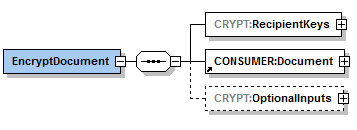 |
||
| 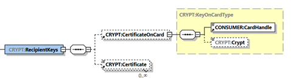 |
|||
| RecipientKeys |
Identifiziert die Empfänger der zu verschlüsselnden Nachricht über X.509-Zertifikate (öffentliche Schlüssel). Quelle für die Zertifikate kann eine Karte sein, die per CertificateOnCard-Element referenziert wird, oder der Aufrufer, der X.509-Zertifikate im Certificate-Element übergibt. |
||
| CardHandle |
Identifiziert die zu verwendende Karte mit dem (öffentlichen) Schlüssel. Ist das Element nicht vorhanden, so werden nur Zertifikate per Element Certificate übergeben. |
||
| Crypt |
Der Wert dieses Parameters ist in Tabelle Tab_KeyReference_für_Encrypt/Decrypt spezifiziert und gibt den Typ von Zertifikaten und dadurch das Verfahren für die Erzeugung der Hybridschlüssel vor. (Default-Wert ist RSA) |
||
| Certificate |
Certificate ist ein Base64-kodiertes XML-Element, in dem das Zertifikat, das den asymmetrischen Schlüssel enthält (öffentlicher Schlüssel), DER-kodiert übergeben wird. Es kann eine Liste von Zertifikaten übergeben werden. Dieses Element kann leer sein, wenn ausschließlich Zertifikate verwendet werden sollen, die über CertificateOnCard angegeben werden. |
||
| CONSUMER: Document |
Dieses entsprechend [OASIS-DSS] Section 2.4.2 spezifizierte Element enthält das zu verschlüsselnde Dokument, wobei das Kindelement dss:Base64Data oder CONSUMER:Base64XML verwendet wird. Das zugeordnete Verschlüsselungsverfahren ist
|
||
| 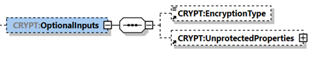 | |||
| CRYPT: Optional Inputs |
Enthält die optionalen Parameter CRYPT:UnprotectedProperties und CRYPT:EncryptionType. | ||
| Encryption Type |
Dieses optionale Element bestimmt das Verschlüsselungsverfahren. Es MUSS das Verfahren XMLEnc: „http://www.w3.org/TR/xmlenc-core/" unterstützt werden, wenn das Dokument in CONSUMER:Base64XML übergeben wird und CMS: „urn:ietf:rfc:5652“, wenn das Dokument in dss:Base64Data übergeben wird. Die Verwendung dieses Elements ist aufgrund der impliziten Zuordnung der Verschlüsselungsverfahren zur Methode der Dokumentübergabe nicht erforderlich. |
||
| CRYPT: Unprotected Properties |
Dieses optionale Element wird nur für das Verschlüsselungsverfahren CMS ausgewertet (zu verschlüsselndes Dokument ist in dss:Base64Data vorhanden). Die Elemente ./UnprotectedProperties/Property/Value/CMSAttribute müssen base64/DER-kodiert ein vollständiges ASN.1-Attribute enthalten, definiert in [CMS# 9.1.AuthenticatedData Type]. Es muss bei der Erstellung des CMS-Containers unter "unauthAttrs" aufgenommen werden. Das zugehörige Element ./UnprotectedProperties/Property/Identifier wird nicht ausgewertet. |
||
| Rückgabe |
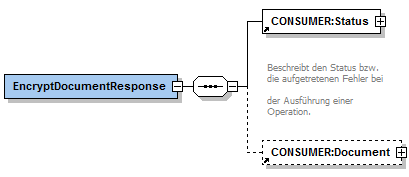 |
||
| Status |
Enthält den Ausführungsstatus der Operation. |
||
| Document |
Enthält das verschlüsselte Dokument in Base64-codierter Form, wenn die Verschlüsselung erfolgreich durchgeführt wurde. Im Fall XMLEnc wird das verschlüsselte XML-Dokument in CONSUMER:Document/CONSUMER:Base64XML zurückgegeben. Im Fall CMS wird das verschlüsselte Dokument in CONSUMER:Docum ent/dss:Base64data zurückgegeben. |
||
| Vorbe-dingungen |
Keine |
||
| Nachbe-dingungen |
Keine |
||
A_17515-02
Der Verschlüsselungsdienst des Basis- und KTR-Consumer MUSS an der Clientschnittstelle eine Operation DecryptDocument anbieten.
Tabelle 10: Tab_Operation_DecryptDocument
| Name |
DecryptDocument |
|
|---|---|---|
| Beschreibung |
Diese Operation entschlüsselt ein hybrid verschlüsseltes Dokument. Es werden die Dokumententypen XML und Andere (Binär) unterstützt. Für die Entschlüsselung wird ein asymmetrischer Schlüssel zu einem X.509v3-Zertifikat genutzt. Das Kryptoverfahren (RSA oder ECC) wird durch den Hybridschlüssel des verschlüsselten Dokuments bestimmt. Liegt eine Verschlüsselung sowohl für RSA, als auch ECC vor, erfolgt vorrangig eine Entschlüsselung mittels des ECC-Schlüssels. |
|
| Aufrufparameter |
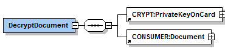 |
|
| 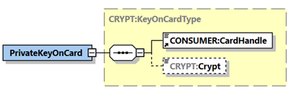 |
||
| PrivateKey OnCard |
Identifiziert die zu verwendende Karte mit dem (privaten) Schlüssel. |
|
| CardHandle |
Identifiziert die Karte. |
|
| Crypt |
Wird nicht verwendet. Die Auswahl des Kryptoverfahrens erfolgt anhand des Hybridschlüssels des verschlüsselten Dokuments.. |
|
| CONSUMER: Document |
Enthält das base64-codierte Dokument, das entschlüsselt werden soll. |
|
| Rückgabe |
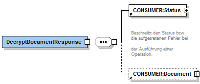 |
|
| Status |
Enthält den Ausführungsstatus der Operation. |
|
| Document |
Enthält das entschlüsselte Dokument in Base64-codierter Form. Im Fall der Verschlüsselung mit XMLEnc wird das entschlüsselte XML-Dokument in CONSUMER:Document/CONSUMER:Base64XML zurückgegeben. Im Fall der Verschlüsselung mit CMS wird das entschlüsselte Dokument in CONSUMER:Document/dss:Base64data zurückgegeben. |
|
| Vorbedingungen |
Keine |
|
| Nachbedingungen |
Keine |
|
Tabelle 11: Tab_KeyReference_für_Encrypt/Decrypt
| Karte |
Crypt (Wert) | KeyReference (Encrypt) |
KeyReference (Decrypt) |
|---|---|---|---|
| In DF.ESIGN | In DF.ESIGN | ||
| SM-B (HSM) |
RSA | EF.C.HCI.ENC.R2048 | PrK.HCI.ENC.R2048 |
| ECC | EF.C.HCI.ENC.E256 | PrK.HP.ENC.E256 | |
| RSA_ECC | EF.C.HCI.ENC.R2048 EF.C.HCI.ENC.E256 |
PrK.HCI.ENC.R2048 PrK.HP.ENC.E256 |
A_17517
Der Basis- und KTR-Consumer MUSS den Systemprozess PL_TUC_SIGN_DOCUMENT_nonQES implementieren und bereitstellen. <=
A_17518
Der Basis- und KTR-Consumer MUSS den Systemprozess PL_TUC_SIGN_HASH_nonQES implementieren und bereitstellen. <=
A_17577
Der Basis- und KTR-Consumer MUSS den Systemprozess PL_TUC_VERIFY_DOCUMENT_nonQES implementieren und bereitstellen.
<=
A_17523
Der Basis- und KTR-Consumer MUSS Clientsystemen einen Basisdienst Signaturdienst (nonQES) anbieten.
Tabelle 12: Tab_Signaturdienst
| Name |
SignatureService |
|
|---|---|---|
| Version |
Siehe Anhang |
|
| Namensraum |
Siehe Anhang |
|
| Namensraum-Kürzel |
SIG für Schema und SIGW für WSDL |
|
| Operationen |
Name |
Kurzbeschreibung |
| SignDocument |
Dokument signieren |
|
| VerifyDocument |
Signatur verifizieren |
|
| ExternalAuthenticate |
Binärstring signieren |
|
| WSDL |
SignatureService.wsdl |
|
| Schema |
SignatureService.xsd |
|
A_17525-02
Der Signaturdienst des Basis- und KTR-Consumer MUSS an der Clientschnittstelle eine an [OASIS-DSS] angelehnte Operation SignDocument wie in Tabelle Tab_Operation_SignDocument beschrieben anbieten.
Tabelle 13: Tab_Operation_SignDocument
| Name | SignDocument | |
|---|---|---|
| Beschreibung |
Diese Operation lehnt sich an [OASIS-DSS] an. Sie enthält voneinander unabhängige SignRequests. Jeder SignRequest erzeugt eine Signatur für ein Dokument. Zur Signaturerzeugung werden Schlüssel und Zertifikate eines HSM benutzt. Es wird ausschließlich der Signaturtyp "CMS-Signatur" gemäß [RFC 5652] (URI urn:ietf:rfc:5652) und das Profil CAdES-BES gemäß[CAdES] verwendet. |
|
| Aufruf-parameter |
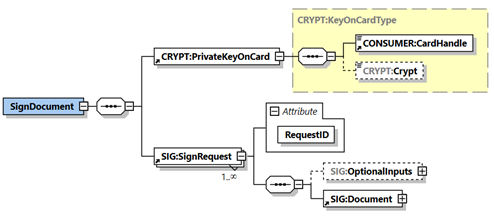 | |
| PrivateKeyOnCard |
Identifiziert die zu verwendende Karte mit dem (privaten) Schlüssel. | |
| CardHandle |
Identifiziert die zu verwendende Signaturkarte. |
|
| Crypt |
Dieser Parameter steuert die Auswahl der Zertifikate und Schlüssel für die Signaturerstellung. Die Werte sind in der Tabelle Tab_Zertifikate_für_Sign/VerifyDocument vorgegeben. (Default-Wert ist RSA) |
|
| SIG:SignRequest |
Ein SignRequest kapselt den Signaturauftrag für ein Dokument. Das verpflichtende XML-Attribut RequestID identifiziert einen SignRequest innerhalb eines Stapels von SignRequests eindeutig. Es dient der Zuordnung der SignResponse zum jeweiligen SignRequest. |
|
| SIG:OptionalInputs |
Enthält optionale Eingangsparameter (angelehnt an dss:OptionalInputs gemäß [OASIS-DSS] Section 2.7): 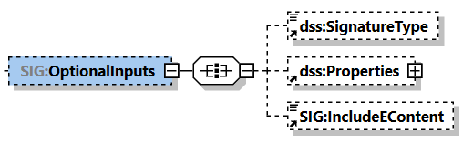 |
|
| SIG:Document |
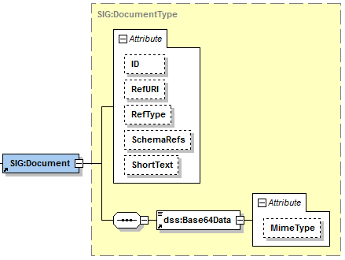 Dieses an das dss:Document Element aus [OASIS-DSS] Section 2.4.2 angelehnte Element enthält das zu signierende Dokument in dss:Base64Data. |
|
| dss:SignatureType |
Durch dieses in [OASIS-DSS] (Abschnitt 3.5.1) beschriebene Element kann der generelle Typ der zu erzeugenden Signaturen angegeben werden. Es muss der Signaturtyp CMS-Signatur (URI urn:ietf:rfc:5652) unterstützt werden. Fehlt dieses Element, so muss der Signaturtyp CMS-Signatur (URI urn:ietf:rfc:5652) implizit verwendet werden. |
|
| dss:Properties |
Durch dieses in [OASIS-DSS] (Abschnitt 3.5.5) definierte Element können zusätzliche signierte und unsignierte Eigenschaften (Properties) bzw. Attribute in die Signatur eingefügt werden . Es dürfen genau die folgenden Attribute ./SignedProperties/Property/Value/CMSAttribute und ./UnsignedProperties/Property/Value/CMSAttribute enthalten sein. Ein solches XML-Element CMSAttribute muss ein vollständiges, base64/DER-kodiertes ASN.1-Attribute enthalten, definiert in [CMS#5.3.SignerInfo Type]. Es muss bei der Erstellung des CMS-Containers unverändert unter SignedAttributes bzw. UnsignedAttributes aufgenommen werden. |
|
| SIG:IncludeEContent |
Durch dieses in [OASIS-DSS] (Abschnitt 3.5.7), definierte Element kann bei einer CMS-basierten Signatur das Einfügen des signierten Dokumentes in die Signatur angefordert werden. Fehlt dieses Element oder ist der Wert = "'false', wird die Signaturvariante "detached" verwendet, ansonsten "enveloping". |
|
| Rückgabe |
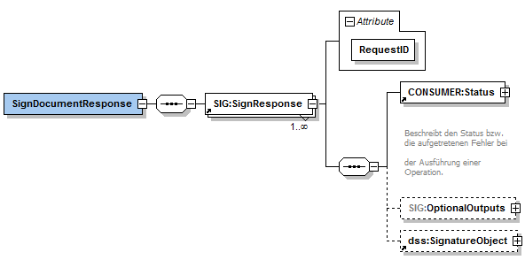 | |
| SIG:SignResponse |
Eine SignResponse kapselt den ausgeführten Signaturauftrag pro Dokument. Die Zuordnung zwischen SignRequest und SignResponse erfolgt über die RequestID. | |
| CONSUMER:Status |
Enthält den Status der ausgeführten Operation pro SignRequest. |
|
| SIG:OptionalOutputs |
Enthält optionale Ausgangsparameter. Dieses Element wird durch den Basis- und KTR-Consumer nicht befüllt. 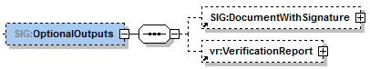 |
|
| SIG:DocumentWith Signature |
Dieses Element wird durch den Basis- und KTR-Consumer nicht befüllt. | |
| vr:VerificationReport |
Dieses Element wird durch den Basis- und KTR-Consumer nicht befüllt. |
|
| dss:SignatureObject |
Enthält im Erfolgsfall die erzeugte Signatur in Form eines dss:SignatureObject-Elements gemäß [OASIS-DSS] (Abschnitt 3.2). Der Signaturwert wird im XML-Element dss:SignatureObject/dss:Base64Signature übergeben. Der Signatur-Typ (CMS Signatur) in dss:SignatureObject/dss:Base64Signature/@Type Die XML-Elemente dss:SignatureObject/ds:Signature dss:SignatureObject/dss:Timestamp dss:SignatureObject/dss:SignaturePtr dss:SignatureObject/dss:Other werden nicht verwendet. |
|
| Vorbe-dingungen |
Keine |
|
| Nachbe-dingungen |
Keine |
|
Tabelle 14: Tab_Zertifikate_für_Sign/VerifyDocument(nonQeS)
| Karte | Crypt (Wert) | KeyReference (Verify) | KeyReference (Sign) |
|---|---|---|---|
| in DF.ESIGN |
in DF.ESIGN |
||
| SM-B (KTR/Org) (HSM) |
RSA | EF.C.HCI.OSIG.R2048 |
PrK.HCI.OSIG.R2048 |
| ECC | EF.C.HCI.OSIG.E256 |
PrK.HCI.OSIG.E256 |
|
| RSA_ECC | EF.C.HCI.OSIG.R2048 EF.C.HCI.OSIG.E256 |
PrK.HCI.OSIG.R2048 PrK.HCI.OSIG.E256 |
A_17526-02
Der Signaturdienst des Basis- und KTR-Consumer MUSS an der Clientschnittstelle eine Operation VerifyDocument wie in Tabelle Tab_Operation_VerifyDocument beschrieben anbieten.
Tabelle 15: Tab_Operation_VerifyDocument
| Name |
VerifyDocument |
||
|---|---|---|---|
| Beschreibung |
Diese Operation verifiziert die Signatur eines Dokumentes. Der Basis- und KTR-Consumer MUSS jede konform zur Clientschnittstelle SignDocument erzeugte Signatur durch VerifyDocument prüfen können. Das Ergebnis der Prüfung wird, wenn gefordert, in Form eines standardisierten Prüfberichts in einer VerificationReport-Struktur gemäß [OASIS-VR] zurückgeliefert. |
||
| Aufruf-parameter |
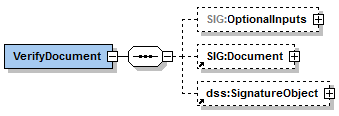 |
||
| SIG: OptionalInputs |
Enthält optionale Eingabeparameter (angelehnt an dss:OptionalInputs gemäß [OASIS-DSS] Section 2.7): Die zulässigen optionalen Eingabeparameter sind unten erläutert. |
||
| SIG: Document |
Enthält im Fall der Prüfung von detached oder enveloped Signaturen das zur Signatur gehörende bzw. das diese umschließende Dokument (siehe [OASIS-DSS] Section 2.4.2 und oben). |
||
| dss: SignatureObject |
Enthält die zu prüfende Signatur, wenn sie nicht im Dokument selbst eingebettet ist ([OASIS-DSS] Kapitel 4.1). Die Signatur wird in ss:Base64Signature mit entsprechend gesetztem Type-Attribut (siehe SignatureType) übergeben, wobei der nachfolgende Werte unterstützt werden muss:
|
||
| 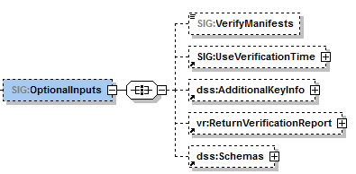 |
|||
| SIG: VerifyManifests |
Dieses Element wird durch den Basis-/KTR-Consumer nicht verwendet. |
||
| 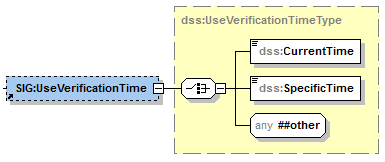 |
|||
| SIG: UseVerification Time |
Durch das in [OASIS-DSS] (Abschnitt 4.5.2) spezifizierte Element kann die Prüfung der Signatur bezüglich eines durch den Aufrufer bestimmten Zeitpunktes (Benutzerdefinierter_Zeitpunkt) erfolgen. |
||
| dss: AdditionalKeyInfo |
Dieses Element wird durch den Basis-/KTR-Consumer nicht verwendet. |
||
| vr: Return VerificationReport |
Durch dieses in [OASIS-VR] spezifizierte Element kann die Erstellung eines ausführlichen Prüfberichtes angefordert werden. |
||
| dss:Schemas | Dieses Element wird durch den Basis-/KTR-Consumer nicht verwendet. | ||
| Rückgabe |
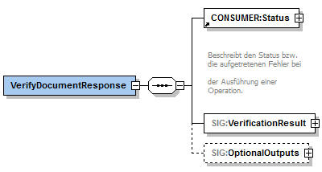 |
||
| Status |
Enthält den Ausführungsstatus der Operation. |
||
| SIG: Verifi cation Result |
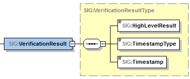 Das Element Sig:VerificationResult enthält das Ergebnis der Prüfung als Ampel, den Typ des zugehörigen angenommenen Signaturzeitpunkts und der angenommene Signaturzeitpunkt selbst. |
||
| SIG: High Level Result |
Das Ergebnis der Prüfung (Ampelschaltung) mit folgenden Werten:
|
||
| SIG: Time stamp Type |
Der Typ des angenommenen Signaturzeitpunkts mit folgenden Werten:
|
||
| SIG: Timestamp |
Im Element SIG:Timestamp wird der zu SIG:TimestampType gehörende Zeitstempel zurückgegeben. |
||
| SIG: Optional Outputs |
Enthält (angelehnt an dss:OptionalOutputs, wie in Abschnitt 2.7 von [OASIS-DSS] beschrieben) optionale Ausgangselemente: 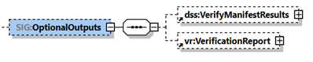 |
||
| dss: Verify Manifest Results |
Dieses Element wird durch den Basis-/KTR-Consumer nicht verwendet. |
||
| vr: Verification Report |
Dieses in [OASIS-VR] spezifizierte Element wird zurückgeliefert, falls das ReturnVerificationReport-Element als Eingabeparameter verwendet wurde. |
||
| Vorbe-dingungen |
Keine |
||
| Nachbe-dingungen |
Keine |
||
A_17578-01
Der Signaturdienst des Basis- und KTR-Consumer MUSS an der Clientschnittstelle die Operation ExternalAuthenticate wie in Tabelle Tab_Operation_ExternalAuthenticate beschrieben anbieten.
Tabelle 16: Tab_Operation_ExternalAuthenticate
| Name |
ExternalAuthenticate |
||
|---|---|---|---|
| Beschrei bung |
Diese Operation versieht einen Binärstring der maximalen Länge 512 Bit mit einer nicht-qualifizierten elektronischen Signatur (nonQES). Dazu wird das Signaturverfahren PKCS#1 oder ECDSA verwendet. |
||
| Aufruf parameter |
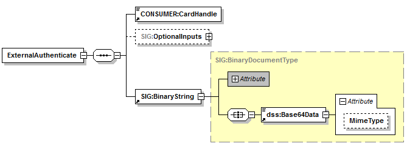 |
||
| Name |
Beschreibung |
||
| CONSUMER: CardHandle |
Identifiziert die zu verwendende Signaturkarte. |
||
| SIG: Optional Inputs |
Enthält optionale Eingangsparameter: 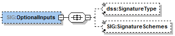 |
||
| SIG: Binary String |
Dieses Element enthält im Kindelement dss:Base64Data den zu signierenden Binärstring. Das XML Attribut SIG:BinaryString/dss:Base64Data/@MimeType MUSS den Wert "application/octet-stream" haben. Die maximale Länge des Binärstrings beträgt 512 Bit entsprechend der maximal zu erwartenden Hash-Größe. Aus der Länge des Binärstrings wird auf das verwendete Hashverfahren geschlossen. Es werden folgende Längen unterstützt:
Im Falle des Signaturverfahrens RSASSA-PSS wird SHA-256 unterstützt. Im Falle des Signaturverfahrens ECDSA wird SHA-256 unterstützt. Für die Signaturerstellung gilt:
|
||
| dss: Signature Type |
Durch dieses in [OASIS-DSS] (Abschnitt 3.5.1) beschriebene Element wird der Typ der zu erzeugenden Signatur bestimmt. Als Signaturtyp wird unterstützt :
Fehlt dieses Element, so wird ebenfalls der Signaturtyp PKCS#1-Signatur verwendet. |
||
| SIG: Signature Schemes |
Durch dieses Element wird für PKCS#1-Signaturen zwischen den folgenden SignatureScheme-Optionen unterschieden:
|
||
| Rückgabe |
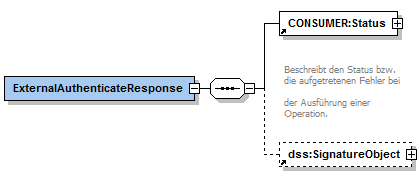 |
||
| CONSUMER: Status |
Enthält den Status der ausgeführten Operation. |
||
| dss: Signature Object |
Enthält im Erfolgsfall die erzeugte Signatur in Form eines dss:SignatureObject-Elements gemäß [OASIS-DSS] (Abschnitt 3.2). Der Signaturwert wird im XML-Element dss:SignatureObject/dss:Base64Signature übergeben. Das XML-Attribut dss:SignatureObject/dss:Base64Signature/@Type kennzeichnet durch den Wert:
dss:SignatureObject/ds:Signature dss:SignatureObject/dss:Timestamp dss:SignatureObject/dss:SignaturePtr dss:SignatureObject/dss:Other werden nicht verwendet. |
||
| Vorbeding ungen |
Keine |
||
| Nachbeding ungen |
Keine |
||
A_17401
Der Basis- und KTR-Consumer MUSS den Systemprozess PL_TUC_PKI_VERIFY_CERTIFICATE implementieren und bereitstellen. <=
A_17408
Der Basis- und KTR-Consumer MUSS Clientsystemen einen Basisdienst Zertifikatsdienst zur Verfügung stellen.
Tabelle 17: Tab_Zertifikatsdienst
| Name |
CertificateService |
|
|---|---|---|
| Version |
Siehe Anhang B |
|
| Namensraum |
Siehe Anhang B |
|
| Namensraum-Kürzel |
CERT für Schema und CERTW für WSDL |
|
| Operationen |
Name |
Kurzbeschreibung |
| VerifyCertificate |
Prüfung des Status eines Zertifikats |
|
| WSDL |
CertificateService.wsdl |
|
| Schema |
CertificateService.xsd |
|
A_17429-01
Der Zertifikatsdienst des Basis- und KTR-Consumer MUSS an der Clientschnittstelle eine Operation VerifyCertificate wie in Tabelle Tab_Operation_VerifyCertificate beschrieben anbieten.
Tabelle 18: Tab_Operation_VerifyCertificate
| Name |
VerifyCertificate |
||
|---|---|---|---|
| Beschreibung |
Prüft den Status eines Zertifikats. |
||
| Aufruf-parameter |
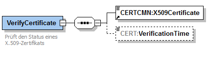 |
||
| Name |
Beschreibung |
||
| CERTCMN: X509Certificate |
Enthält das base64-codierte Zertifikat, dessen Binärstruktur wiederum ASN.1-codiert (gemäß [gemSpec_PKI]) vorliegt. |
||
| CERT: VerificationTime |
Der für die Prüfung zu verwendende Referenzzeitpunkt. Falls der Parameter nicht angegeben ist, wird als Referenzzeitpunkt die Systemzeit verwendet. |
||
| Rückgabe |
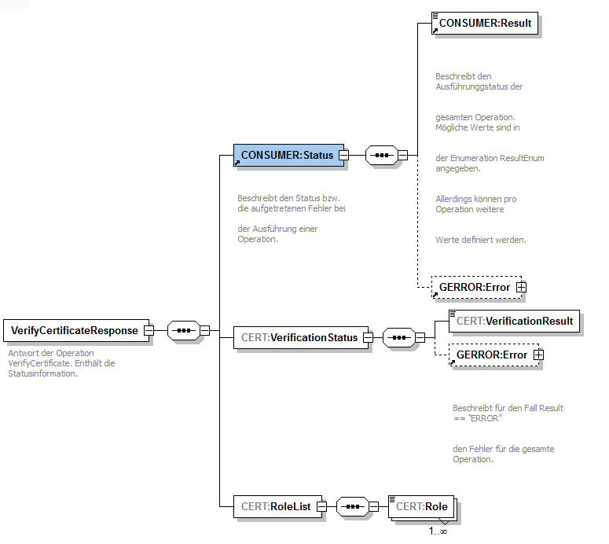 |
||
| Status |
Enthält den Ausführungsstatus der Operation. |
||
| CERT:VerificationStatus |
Enthält eines der drei möglichen Prüfungsergebnisse in CERT:VerificationResult
|
||
| CERT:RoleList |
OIDs der im Zertifikat gespeicherten Rollen. |
||
| Vorbe-dingungen |
Keine |
||
| Nachbe-dingungen |
Keine |
||
Tabelle 19: Tab_Ablauf_VerifyCertificate
| Nr. |
Aufruf Technischer Use Case oder Interne Operation |
Beschreibung |
|---|---|---|
| 1. |
PL_TUC_PKI_ VERIFY_CERTIFICATE |
Die Zertifikatsprüfung erfolgt durch Aufruf von PL_TUC_PKI_VERIFY_CERTIFICATE { Zu prüfendes Zertifikat = CERTCMN:X509Certificate; Referenzzeitpunkt = CERT:VerificationTime; PolicyList = keine Einschränkung; KeyUsage = empty; ExtendedKeyUsage = empty; OCSP-Graceperiod = empty; Offline-Modus = nein; OCSP-Response = empty ; Timeout = empty; TOLERATE_OCSP_FAILURE = ja; } |
| 2. |
Wenn der Prüfprozess fehlerhaft war und nicht zu einem Ergebnis im Sinne eines VerificationResult führt, wird eine FaultMessage erzeugt. War der Prüfprozess erfolgreich, wird eine VerifyCertificateResponse mit
|
Tabelle 20: Tab_Übersicht_VerificationResult_VerifyCertificate
| CERT:VerificationResult |
Bedeutung |
|---|---|
| VALID |
Wenn Gültigkeit zu Referenzzeitpunkt: "gültig" Mathematische Gültigkeit:"gültig" OCSP-Prüfung: Online gültig |
| INVALID |
Wenn mindestens ein Wert von (Gültigkeit zu Referenzzeitpunkt, Mathematische Gültigkeit, OCSP-Prüfung) „ungültig“,„Prüffehler“ oder „gesperrt" ist. |
| INCONCLUSIVE |
Wenn OCSP-Prüfung „unbekannt“ und die andere Werte „gültig“ sind. |
A_17343
Der Basis- und KTR-Consumer MUSS für die in Tab_Ldap_TUC_Mapping aufgelisteten Systemprozesse die entsprechenden LDAP-Operationen implementieren und zur Nutzung durch interne Module zur Verfügung stellen.
Tabelle 21: Tab_Ldap_TUC_Mapping
| LDAPv3-Operation |
Systemprozess |
|---|---|
| Bind |
PL_TUC_VZD_BIND |
| Unbind |
PL_TUC_VZD_UNBIND |
| Search |
PL_TUC_VZD_SEARCH |
| Abandon |
PL_TUC_VZD_ABANDON |
A_17341
Der Basis- und KTR-Consumer MUSS an der Client-Schnittstelle die folgenden LDAPv3-Operationen für den Zugriff auf den Verzeichnisdienst der TI gemäß [RFC4511] anbieten.
A_17298
Das KOM-LE-Clientmodul MUSS sich unter Verwendung des Systemprozesses PL_TUC_NET_SYNC_TIME mit der Systemzeit des Zeitservers der zentralen TI-Plattform synchronisieren. <=
A_17299-01
Das KOM-LE-Clientmodul MUSS die in Tabelle Tab_Konf_Param aufgelisteten Parameter über eine Managementoberfläche oder eine Konfigurationsdatei konfigurierbar gestalten und mit einer Standardkonfiguration entsprechend den Defaultwerten ausliefern.
Tabelle 22: Tab_Konf_Param Standardkonfiguration
| Parameter |
Beschreibung des Parameters |
Defaultwert |
|---|---|---|
| ADDRESS_SMTP |
URI SMTP-Server |
- |
| ADDRESS POP3 |
URI POP3-Server |
- |
| PORT_SMTP |
SMTP-Port für Clientsysteme |
Der Wert muss den Rahmenbedingungen des Herstellers entsprechend gewählt werden, z.B. als einer der folgenden Werte:
|
| PORT_POP3 |
POP3-Port für Clientsysteme |
995 |
| SMTP_TIMEOUT_SERVER |
Timeout für Antworten vom SMTP-Server auf SMTP-Kommandos |
5 Minuten |
| SMTP_TIMEOUT_CLIENT |
Timeout für das Warten auf neue SMTP-Kommandos vom Clientsystem |
5 Minuten |
| POP3_TIMEOUT_SERVER |
Timeout für Antworten vom POP3-Server auf POP3-Kommandos |
5 Minuten |
| POP3_TIMEOUT_CLIENT |
Timeout für das Warten auf neue POP3-Kommandos vom Clientsystem |
5 Minuten |
| TTL_ENC_CERT |
Time to Live für gecachte Verschlüsselungs-zertifikate |
24 Stunden |
| TTL_EMAIL_ICCSN |
Time to Live für gecachte Zuordnungen von E-Mail-Adressen der Sender bzw. Empfänger zu ICCSNs von deren HBAs/SM-Bs |
30 Tage |
| TTL_PROTS |
Time to Live für Protokolldateien. |
30 Tage |
| PROT_PERF |
Protokolldatei für Performance |
JA |
A_17503
Das KOM-LE-Clientmodul MUSS für die Prüfung von TLS-Server-Zertifikaten der KOM-LE-Fachdienste den Systemprozess PL_TUC_PKI_VERIFY_CERTIFICATE des Basis- und KTR-Consumer benutzen.
<=
A_22664
Das KIM-Clientmodul des Basis-Consumers MUSS vor dem Versenden einer Nachricht die KIM-Version des Absenders mittels des LDAP-Directory Attributs: komLeData aus dem Verzeichnisdienst [gemSpec_VZD#5] abfragen. Ist die KIM-Version des Clientmoduls kleiner als die im Verzeichnisdienst eingetragene, so MUSS das Clientmodul den Absender mit einer E-Mail darüber informieren. Aus dem Inhalt der E-Mail MUSS hervorgehen, dass die verwendete Clientmodul-Version veraltet ist. Die E-Mail ist weder zu signieren noch zu verschlüsseln und entspricht der Delivery Status Notification gemäß [RFC3461-3464]. Ist die KIM-Version des Clientmoduls größer als die im Verzeichnisdienst abgefragte Version KANN das Clientmodul des Basis-Consumers das LDAP-Directory Attribut: komLeData für den Absender mit der neuen Versionen überschreiben. <=
Es wird dem Empfänger von E-Mails die Entscheidung ermöglicht, ob er sich mit komLeData 1.5 im Verzeichnisdienst einträgt, oder es bei der 1.0 belässt und damit keine E-Mails mit Anhängen > 25 MB empfangen kann.
A_17300
Das KOM-LE-Clientmodul MUSS, nachdem die SMTP-Verbindung zwischen dem Clientsystem und dem Clientmodul aufgebaut wird und bis zum Punkt an dem das Clientsystem die Bestätigung des Erfolgs oder Misserfolgs seiner Authentifizierung erwartet, einen SMTP-Dialog entsprechend der Tabelle Tab_SMTP_Ant_Init mit dem Clientsystem führen.
Tabelle 23: Tab_SMTP_Ant_Init Antworten Clientmodul im CONNECT-Zustand
| SMTP-Kommando (Clientsystem -> Clientmodul) |
SMTP-Antwortcode (Clientmodul -> Clientsystem) |
|---|---|
| HELO |
“250 OK” Antwortcode |
| EHLO |
“250 OK” Antwortcode mit folgenden EHLO-Kennworten: SIZE <size> AUTH LOGIN PLAIN 8BITMIME ENHANCEDSTATUSCODES DSN und <size> gleich oder großer als 35882577 |
| AUTH |
Anmeldungsdaten erhalten und Verbindungsaufbau mit dem MTA beginnen |
| RSET, NOOP |
„250 OK“ Antwortcode |
| MAIL, RCPT, DATA |
„530 5.7.0“ Antwortcode (Authentication required) |
| QUIT |
„221 OK“ Antwortcode senden und die Verbindung mit dem Clientsystem schließen |
| Andere Meldungen |
„502 5.5.1“ Antwortcode (Invalid command) |
A_17301
Das KOM-LE-Clientmodul MUSS für den Verbindungsaufbau mit dem SMTP-Server die Werte der Konfigurationsparameter ADDRESS_SMTP und PORT_SMTP verwenden. <=
A_17302
Das KOM-LE-Clientmodul MUSS den Benutzernamen und das Passwort, die es vom Clientsystem erhalten hat, für die Authentisierung gegenüber dem SMTP-Server verwenden. <=
A_17303
Das KOM-LE-Clientmodul MUSS das Clientsystem über das Ergebnis des Verbindungsaufbaus mit dem MTA mit den in Tabelle Tab_SMTP_Verbindung beschriebenen SMTP-Antwortcodes informieren.
Tabelle 24: Tab_SMTP_Verbindung SMTP-Antwortcodes für MTA-Verbindungsaufbau
| Bedingung |
SMTP-Antwortcode (Clientmodul -> Clientsystem) |
|---|---|
| Das Clientmodul hat sich erfolgreich gegenüber dem MTA mit den vom Clientsystem erhaltenen Anmeldungsdaten authentifiziert. |
235 2.7.0 (Authentication successful) |
| Das Clientsystem verwendet für die SMTP-Authentifizierung einen anderen Mechanismus als PLAIN oder LOGIN. |
504 5.7.4 (Security features not supported) |
| Die Verbindung zwischen dem Clientmodul und dem MTA kann nicht aufgebaut werden. |
454 4.7.0 (Temporary authentication failure) |
| Die Authentifizierung gegenüber dem MTA schlägt fehl. |
535 5.7.8 (Authentication credentials invalid) |
A_17305
Das KOM-LE-Clientmodul MUSS für das Signieren und Verschlüsseln der Nachrichten entsprechend dem KOM-LE-S/MIME-Profil die Systemprozesse PL_TUC_SIGN_DOCUMENT_nonQES und PL_TUC_HYBRID_ENCIPHER des Basis- und KTR-Consumers verwenden. <=
A_17306
Das KOM-LE-Clientmodul MUSS zur Signatur und Verschlüsselung von KOM-LE Nachrichten das folgende Vorgehen umsetzen:
A_17327
Das KOM-LE-Clientmodul MUSS für das Signieren einer KOM-LE-Nachricht den privaten Schlüssel PrK.HCI.OSIG.R2048 der SM-B der jeweiligen Organisation (Kostenträger oder Leistungserbringerorganisation) verwenden.
<=
A_17328
Das KOM-LE-Clientmodul MUSS, nachdem die POP3-Verbindung zwischen dem Clientsystem und dem Clientmodul aufgebaut wurde und bis zu dem Punkt an dem das Clientsystem die Bestätigung des Erfolgs oder Misserfolgs seiner Authentifizierung erwartet, einen POP3-Dialog entsprechend Tabelle Tab_POP3_Ant_Init mit dem Clientsystem führen.
Tabelle 25: Tab_POP3_Ant_Init Antworten Clientmodul im CONNECT-Zustand
| Clientsystem -> Clientmodul |
Clientmodul -> Clientsystem |
|---|---|
| CAPA |
“+OK” Antwortcode mit folgenden CAPA Kennworten: TOP USER SASL PLAIN UIDL |
| USER, AUTH |
Anmeldungsdaten erhalten und Verbindungsaufbau mit dem POP3-Server fortsetzen |
| QUIT |
„+ OK“ Antwortcode senden und die Verbindung mit dem Clientsystem schließen |
| Andere Meldungen |
„-ERR“ Antwortcode |
A_17329
Das KOM-LE-Clientmodul MUSS für den Verbindungsaufbau mit dem POP3-Server die Werte der Konfigurationsparameter ADDRESS_POP3 und PORT_POP3 verwenden. <=
A_17330
Das KOM-LE-Clientmodul MUSS den Benutzernamen und das Passwort,die es vom Clientsystem erhalten hat, für die Authentifizierung gegenüber dem POP3-Server verwenden. <=
A_17331
Das KOM-LE-Clientmodul MUSS das Clientsystem über das Ergebnis des Verbindungsaufbaus mit dem POP3-Server mit den in der Tabelle Tab_POP3_Verbindung beschriebenen POP3-Antwortcodes informieren.
Tabelle 26: Tab_POP3_Verbindung Antwortcodes für POP3-Server-Verbindungsaufbau
| Bedingung |
POP3 Antwortcode (Clientmodul -> Clientsystem) |
|---|---|
| Das Clientsystem hat sich erfolgreich gegenüber dem POP3-Server mit den vom Clientsystem erhaltenen Anmeldungsdaten authentifiziert. |
+OK |
| Das Clientsystem verwendet für die POP3-Authentifizierung einen anderen Mechanismus als USER/PASS oder PLAIN. |
-ERR |
| Die Verbindung zwischen dem Clientmodul und dem POP3-Server kann nicht aufgebaut werden. |
-ERR |
| Die Authentifizierung gegenüber dem MTA schlägt fehl. |
-ERR |
A_17333
Das KOM-LE-Clientmodul MUSS den vom Clientsystem erhaltenen POP3-Usernamen als die E-Mail-Adresse des den Abholvorgang auslösenden Nutzers betrachten. <=
A_17504
Das KOM-LE-Clientmodul MUSS für das Entschlüsseln und die Signaturprüfung der Nachrichten die Systemprozesse PL_TUC_VERIFY_DOCUMENT_nonQES und PL_TUC_HYBRID_DECIPHER des Basis- und KTR-Consumers verwenden.
<=
A_17337
Das KOM-LE-Clientmodul MUSS die Entschlüsselung einer Nachricht abbrechen, wenn die für die Entschlüsselung erforderliche SM-B nicht verfügbar ist. <=
A_17338
Das KOM-LE-Clientmodul MUSS die Entschlüsselung einer Nachricht abbrechen, wenn die Freischaltung der für die Entschlüsselung erforderlichen SM-B fehlschlägt. <=
A_18130
Der Basis-Consumer MUSS für den Zugriff auf Smartcards die in TAB_Systemprozesse mit PL_TUC_CARD_* bezeichneten Systemprozesse benutzen.
<=
Wenn der Basis-Consumer Smartcards unterstützt, muss er eine Schnittstelle zu Karten der TI über ein Kartenterminal herstellen. Diese Schnittstelle muss die von den Plattformprozessen erzeugten, kartenverständlichen APDUs an die Karte übertragen. Neben proprietären Schnittstellentreibern von Kartenterminalherstellern existiert eine Reihe standardisierter Schnittstellen, die auch von verschiedenen Betriebssystemen zur Anbindung handelsüblicher Kartenterminals unterstützt werden.
Die folgenden Anforderungen betreffen die gemäß [gemSpec_Systemprozesse_dezTI#ENV_TUC_CARD_APDU_TRANSPORT] zu beschreibende Transportschnittstelle.
A_18166
Wenn der Basis-Consumer Smartcards unterstützt, MUSS der Basis-Consumer mit dem Kartenterminal ausschließlich über eine vertrauliche, integritätsgeschützte Verbindung kommunizieren. <=
A_18097
Wenn der Basis-Consumer Smartcards unterstützt, MUSS er eine sichere Transportschnittstelle für die Übertragung von Smartcard-APDUs gemäß [CT-API] implementieren. <=
A_18100
Der Basis-Consumer KANN eine Transportschnittstelle für die Übertragung von SmartCard-APDUs auf Basis des SICCT-Protokolls gemäß [CCID] und unter Verwendung der vom Hersteller des Kartenterminals ggf. bereitgestellten Hardwaretreiber implementieren. <=
A_18163
Wenn der Basis-Consumer Smartcards unterstützt, MUSS er mindestens ein Kartenterminal enthalten.
<=
A_18102
Der Basis-Consumer DARF ein eingegebenes PIN-Geheimnis NICHT speichern. <=
A_18103
Der Basis-Consumer MUSS sicherstellen, dass das eingegebene PIN-Geheimnis ausschließlich an die Karte und nicht an andere Adressaten übermittelt wird.
<=
Anwendungsfälle zur PIN-Verwaltung, zur Kartenfreischaltung oder weiterer Fachanwendungen können die Eingabe eines PIN- oder PUK-Geheimnisses erfordern. Der Zugriff auf Karten der TI erfolgt über die Systemprozesse PL_TUC_CARD_*. Der Basis-Consumer als Realisierungsumgebung der Systemprozesse muss seinerseits die von der Plattform geforderten Schnittstellen gemäß [gemSpec_Systemprozesse_dezTI#ENV_TUC_CARD_SECRET_INPUT] implementieren, um die Kommunikation der Plattform mit dem Benutzer zu ermöglichen.
Die Kommunikationsschnittstelle ist in Kapitel 6.6.1 Transportschnittstelle für Kartenkommandos beschrieben und umfasst das Kartenterminal, Eingabemedium und Hinweistexte an den Benutzer. Diese kann je nach Konfiguration an einem Gerät als Kartenterminal oder auch eine Kombination aus Bildschirmausgabe, Kartenterminal-PIN-Pad und/oder Tastatureingabe erfolgen.
A_18107
Wenn der Basis-Consumer Smartcards unterstützt, MUSS er eine Operation gemäß [gemSpec_Systemprozesse_dezTI#ENV_TUC_CARD_SECRET_INPUT] zur Eingabe eines PIN/PUK-Geheimnisses und Weiterleitung an eine Smartcard mit folgenden Parametern implementieren:
Eingabeparameter:
A_18108
Wenn der Basis-Consumer Smartcards unterstützt, MUSS er die Abbildung der Eingabeparameter auf die Rückgabewerte der Operation ENV_TUC_SECRET_INPUT derart umsetzen, dass
A_18109
Der Basis-Consumer DARF ein Kartenkommando NICHT an eine angebundene Karte weiterleiten, wenn dies nicht explizit im Kontext eines Anwendungsfalls (intendierte Kartenoperationen und Erhöhen des Sicherheitszustands der Karte, falls erforderlich) erforderlich ist. <=
Abkürzungen
| Kürzel |
Erläuterung |
|---|---|
| AZPD |
Anbieter Zentrale Plattform Dienste |
| CMS |
Cryptographic Message Syntax |
| HSM |
Hardware Security Module |
| IPv4 |
Internet Protokoll Version 4 |
| IPv6 |
Internet Protokoll Version 6 |
| KOM-LE |
Kommunikation für Leistungserbringer |
| LDAP |
Leightweight Directory Access Protocol |
| MIME |
Multipurpose Internet Mail Extensions |
| MTA |
Mail Transfer Agent |
| POP3 |
Post Office Protocol Version 3 |
| S/MIME |
Secure/Multipurpose Internet Mail Extensions |
| SM-B |
Security Module Typ B |
| SMTP |
Simple Mail Transfer Protocol |
| TI |
Telematikinfrastruktur |
| WANDA Basic | Weitere Anwendungen für den Datenaustausch ohne Nutzung der TI oder derer kryptografischen Identitäten |
| WANDA Smart | Weitere Anwendungen für den Datenaustausch mit Nutzung der TI oder derer kryptografischen Identitäten für eigene Anwendungszwecke |
| Begriff |
Erläuterung |
|---|---|
| Funktionsmerkmal |
Der Begriff beschreibt eine Funktion oder auch einzelne, eine logische Einheit bildende Teilfunktionen der TI im Rahmen der funktionalen Zerlegung des Systems. |
Das Glossar wird als eigenständiges Dokument, vgl. [gemGlossar] zur Verfügung gestellt.
Die nachfolgende Tabelle enthält die Bezeichnung der in dem vorliegenden Dokument referenzierten Dokumente der gematik zur Telematikinfrastruktur. Der mit der vorliegenden Version korrelierende Entwicklungsstand dieser Konzepte und Spezifikationen wird pro Release in einer Dokumentenlandkarte definiert, Version und Stand der referenzierten Dokumente sind daher in der nachfolgenden Tabelle nicht aufgeführt. Deren zu diesem Dokument passende jeweils gültige Versionsnummer sind in der aktuellsten, von der gematik veröffentlichten Dokumentenlandkarte enthalten, in der die vorliegende Version aufgeführt wird.
| [Quelle] |
Herausgeber: Titel |
|---|---|
| [gemGlossar] |
gematik: Einführung der Gesundheitskarte - Glossar |
| [gemSMIME_KOMLE] |
gematik: S/MIME-Profil Kommunikation Leistungserbringer(KOM-LE) |
| [gemSpec_CM_KOMLE] |
gematic: Spezifikation KOM-LE-Clientmodul |
| [gemSpec_Systemprozesse_dezTI] |
gematik: Spezifikation der Systemprozesse der dezentralen TI |
| [gemSpec_VZD] |
gematik: Spezifikation Verzeichnisdienst |
| [gemKPT_Arch_TIP] |
gematik: Konzept Architektur der TI-Plattform |
| [gemSpec_FM_ePA_KTR_Consumer] |
gematik: Spezifikation Fachmodul ePA im KTR-Consumer |
| [gemSpec_PKI] | gematik: Übergreifende Spezifikation PKI |
| [gemSpec_Net] | gematik: Übergreifende Spezifikation Netzwerk |
| [Quelle] |
Herausgeber (Erscheinungsdatum): Titel |
|---|---|
| [BSI-TR-03111] | BSI TR-31111: Elliptic Curve Cryptography, Version 2.10, Juni 2018 |
| [RFC1939] |
RFC 1939: Post Office Protocol – Version 3, J. Myers, M. Rose, Mai 1996 |
| [RFC2045] |
RFC 2045: Multipurpose Internet Mail Extension (MIME) Part One: Format of Internet Message Bodies, N. Freed, N. Borenstein, November 1996 |
| [RFC2119] |
RFC 2119 (März 1997): Key words for use in RFCs to Indicate Requirement Levels S. Bradner |
| [RFC4511] |
RFC 4511: Lightweight Directory Access Protocol (LDAP), J. Sermersheim, Juni 2006 |
| [RFC4954] |
RFC 4954: SMTP Service Extension for Authentication, R. Siemborski, A. Melnikov, März 2007 |
| [RFC5083] |
RFC 5083: Authenticated-Enveloped-Data Content Type, R.Housley, November 2007 |
| [RFC5321] |
RFC 5321: Simple Mail Transfer Protocol, J. Klensin, Oktober 2008 |
| [RFC5652] |
RFC 5652: Cryptographic Message Syntax (CMS), R. Housley, September 2009 |
| [RFC5751] |
RFC 5751: Secure/Multipurpose Internet Mail Extensions (S/MIME) Version 3.2 Message Specification, B. Ramsdell, S. Turner, Januar 2010 |
| [RFC1812] | RFC 1812: Requirements for IP Version 4 Routers, Juni 1995 |
| [RFC2644] | RFC 2644: Changing the Default for Directed Broadcasts in Routers, August 1999 |
| [RFC791] | RFC 791: Internet Protocol, September 1981 |
| [RFC3022] | RFC 3022: Traditional IP Network Address Translator (Traditional NAT), Januar 2001 |
| [RFC1918] | RFC 1918: Address Allocation for Private Internets, Februar 1996 |
| [RFC6598] | RFC 6598: IANA-Reserved IPv4 Prefix for Shared Address Spac, April 2012 |
| [OASIS-DSS] |
OASIS: Digital Signature Service Core Protocols, Elements, and Bindings, Version 1.0, OASIS Standard, via http://docs.oasis-open.org/dss/v1.0/oasis-dss-core-spec-v1.0-os.pdf |
| [OASIS-SP] |
OASIS: Signature Policy Profile of the OASIS Digital Signature Services Version 1.0, Committee Draft 01, 18 May 2009, http://docs.oasis-open.org/dss-x/profiles/sigpolicy/oasis-dssx-1.0-profiles-sigpolicy-cd01.pdf |
| [OASIS-VR] |
OASIS: Profile for comprehensive multi-signature verification reports for OASIS Digital Signature Services Version 1.0, Committee Specification 01, 12 November 2010, http://docs.oasis-open.org/dss-x/profiles/verificationreport/oasis-dssx-1.0-profiles-vr-cs01.pdf |
| [XMLEnc] |
XML Encryption Syntax and Processing W3C Recommendation 11 April 2013 http://www.w3.org/TR/xmlenc-core1/ |
| [XPATH] |
W3C Recommendation (14 December 2010) XML Path Language (XPath) 2.0 (Second Edition) http://www.w3.org/TR/2010/REC-xpath20-20101214/ |
| [CMS] |
Cryptographic Message Syntax (CMS), September 2009 http://tools.ietf.org/html/rfc5652 |
| [Canon XML1.1] |
Canonical XML Version 1.1 http://www.w3.org/TR/2008/REC-xml-c14n11-20080502/ |
| [CAdES] |
ETSI: Electronic Signature Formats, Electronic Signatures and Infrastructures (ESI) – Technical Specification, ETSI TS 101 733 V2.2.1, 2008-07, via http://www.etsi.org |
| [CT-API] | https://www.tuvit.de/de/aktuelles/beitraege-white-paper/card-terminal-application-programing-interface-fuer-chipkartenanwendungen// |
| [CCID] | https://usb.org.10-1-108-210.causewaynow.com/sites/default/files/DWG_Smart-Card_CCID_Rev110.pdf |
Für den Fall, dass Schnittstellenversionen unterstützt werden müssen, die den gleichen TargetNamespace nutzen, kann der Basis- und KTR-Consumer zu diesen Schnittstellenversionen einheitlich einen SOAP-Endpunkt anbieten, der die höchste der Schnittstellenversionen implementiert.
Tabelle 27: Tab_Schema_Versionen Versionen der Schemas aus dem Namensraum des Basis- und KTR-Consumers
| Schemas aus dem Namensraum des Basis- und KTR-Consumer „http://ws.gematik.de/consumer“ |
||
|---|---|---|
| Name |
Version |
TargetNamespace |
| CertificateService.wsdl |
2.0.0 |
http://ws.gematik.de/consumer/CertificateService/WSDL/v2.0 |
| CertificateService.xsd |
2.0.0 |
http://ws.gematik.de/consumer/CertificateService/v2.0 |
| CertificateServiceCommon.xsd |
1.0.0 |
http://ws.gematik.de/consumer/CertificateServiceCommon/v1.0 |
| ConsumerCommon.xsd |
2.0.0 |
http://ws.gematik.de/consumer/ConsumerCommon/v2.0 |
| EncryptionService.wsdl |
2.0.0 |
http://ws.gematik.de/consumer/EncryptionService/WSDL/v2.0 |
| EncryptionService.xsd |
2.0.0 |
http://ws.gematik.de/consumer/EncryptionServiceCommon/v2.0 |
| SignatureService.wsdl |
2.0.0 |
http://ws.gematik.de/consumer/SignatureService/WSDL/v2.0 |
| SignatureService.xsd |
2.0.0 |
http://ws.gematik.de/consumer/SignatureServiceCommon/v2.0 |
Der Basis- und KTR-Consumer verwendet u.a. die in Tabelle TAB_Systemprozesse dargestellten Plattformleistungen aus [gemSpec_Systemprozesse_dezTI].
Tabelle 28: TAB_Systemprozesse – Verwendete Plattformleistungen
| Kürzel |
Bezeichnung |
|---|---|
| PL_TUC_HYBRID_DECIPHER |
Hybrid entschlüsseln |
| PL_TUC_HYBRID_ENCIPHER |
Hybrid verschlüsseln |
| PL_TUC_SIGN_DOCUMENT_nonQES |
Dokument nonQES signieren |
| PL_TUC_SIGN_HASH_nonQES |
mit Karten-Identität signieren |
| PL_TUC_VERIFY_DOCUMENT_nonQES |
nonQES Dokumentensignatur verifizieren |
| PL_TUC_PKI_VERIFY_CERTIFICATE |
Prüfung eines Zertifikats der TI |
| PL_TUC_VZD_BIND |
Verbindung aufbauen |
| PL_TUC_VZD_UNBIND |
Verbindung trennen |
| PL_TUC_VZD_SEARCH |
Verzeichnis abfragen |
| PL_TUC_VZD_ABANDON |
Verzeichnisabfrage abbrechen |
| PL_TUC_NET_SYNC_TIME |
Zeit synchronisieren |
| PL_TUC_CARD_INFORMATION | gesammelte Statusinformationen zu einer Karte |
| PL_TUC_CARD_RESET |
Rücksetzen einer Karte |
| PL_TUC_CARD_CHANGE_PIN |
PIN ändern |
| PL_TUC_CARD_ENABLE_PIN |
PIN-Schutz einschalten |
| PL_TUC_CARD_DISABLE_PIN |
PIN-Schutz abschalten |
| PL_TUC_CARD_VERIFY_PIN |
Benutzer verifizieren |
| PL_TUC_CARD_ACTIVATE_APPLICATION |
Anwendung aktivieren |
| PL_TUC_CARD_DEACTIVATE_APPLICATION |
Anwendung deaktivieren |
| PL_TUC_CARD_GET_CHALLENGE |
Auslesen einer Zufallszahl |